Меню сайта
Что такое FNF?
Самый первый мод FNF
Самые популярные моды FNF
 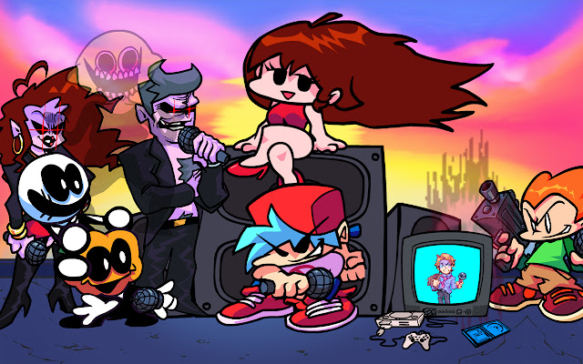
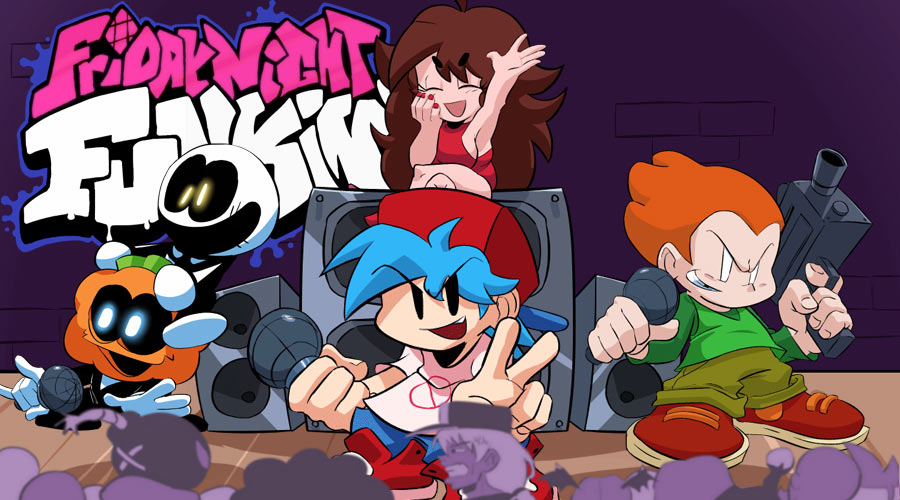
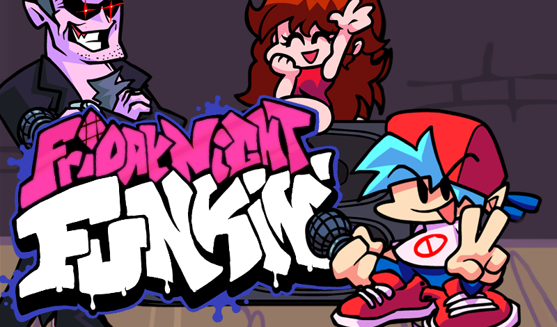
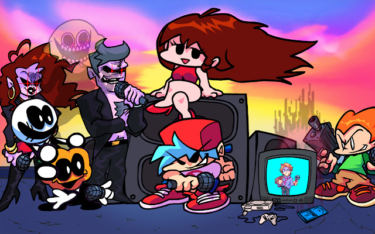
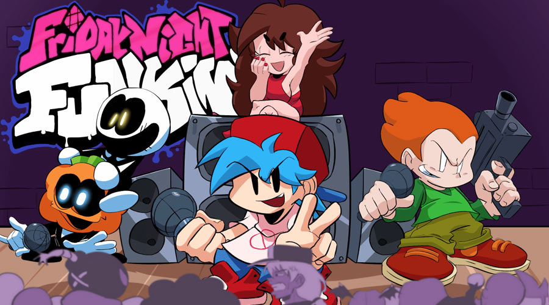
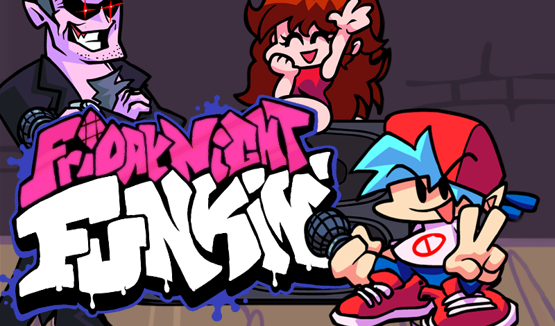
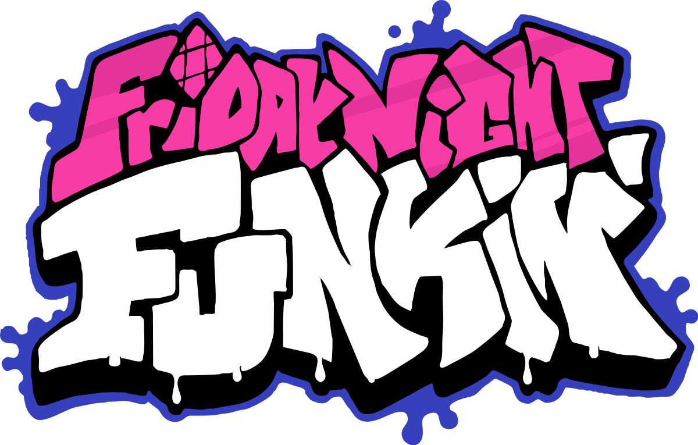
Friday Night Funkin — бесплатная игра с открытым исходным кодом, которая разрабатывается канадским программистом Кэмероном Тейлором (более известным под псевдонимом ninjamuffin99) при помощи OpenFL на языке программирования Haxe.
Игровой процесс схож с такими играми, как Rock Band, Dance Dance Revolution и PaRappa the Rapper, а по стилистике напоминает флэш-игры, популярные в начале и середине 2000-х годов на таких платформах, как Newgrounds.
Действие игры происходит вокруг Парня
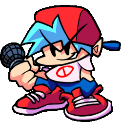,
который хочет встречаться с Девушкой
,
но для этого должен пройти испытание родителей
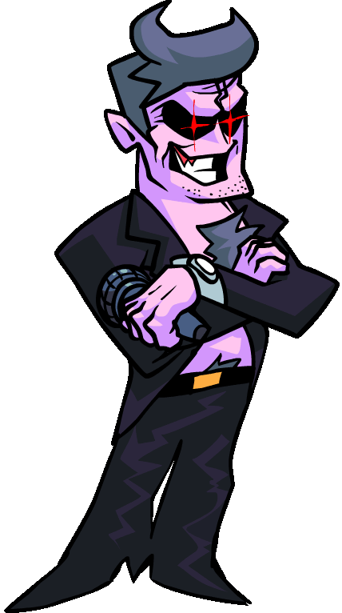
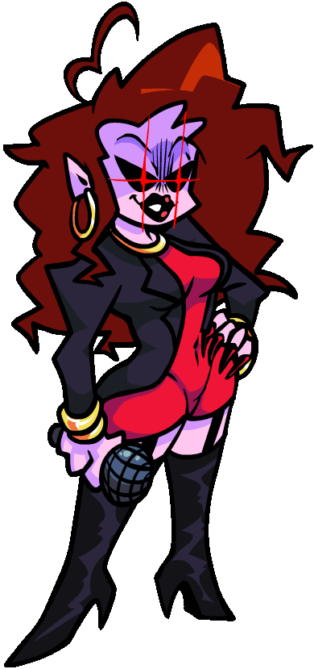
Девушки и победить множество персонажей в рэп-битвах.
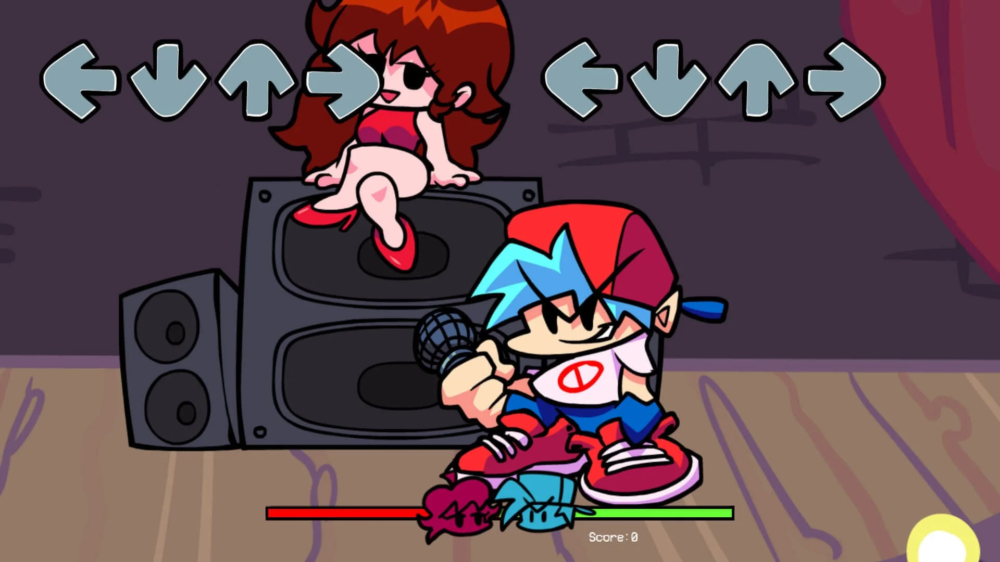
Friday Night Funkin — это ритм-игра, в которой игрок должен пройти несколько «недель» (уровней), каждая из которых содержит по несколько песен. Каждую неделю игрок сталкивается с новым противником.
Во время игры противник поёт набор нот, которые игрок зачастую должен повторить, нажимая клавиши со стрелками и WASD, а также настроить сочетание клавиш . Внизу экрана есть шкала здоровья, разделенная на две части: полосы противника и игрока. Успешное нажатие нот увеличит размер полосы игрока (уменьшая полосу противника), в то время как их пропуск расширит полосу оппонента (уменьшая полосу игрока). Игрок проигрывает, если полоса противника заполняет всю шкалу.
Для каждой «недели» игрок может выбрать одну из 3 сложностей: лёгкую (англ. Easy), среднюю (англ. Normal) и тяжёлую (англ. Hard). По мере увеличения сложности скорость движения стрелок увеличивается и затрудняет попадание по ним, количество стрелок также возрастает. Рекорд игрока за каждую неделю на каждой сложности отслеживается и отображается в левом верхнем углу экрана.
Также есть возможность играть в режиме «свободной игры», где отсутствуют недели и кат-сцены — так игрок может отдельно проходить любую песню.
Тейлор опубликовал новую сборку на Newgrounds в ноябре 2020 года, включающую в себя неделю, связанную с анимационным веб-сериалом «Spooky Month». Интерес к игре вырос, и она стала самой рейтинговой игрой за 25-летнюю историю Newgrounds. Игра также получила значительное внимание благодаря трендам на таких платформах, как Youtube, Twitter, TikTok и Twitch.
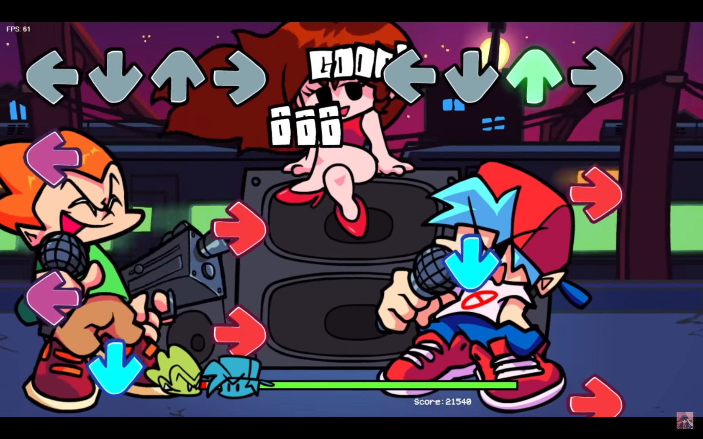
Благодаря выпуску с открытым исходным кодом, игра имеет активное сообщество создателей пользовательских модификаций, позволяя реализовывать контент, созданный фанатами.
Информация о самом первом моде для FNF — "vs Whitty" — находится на странице
"Самый первый мод FNF"
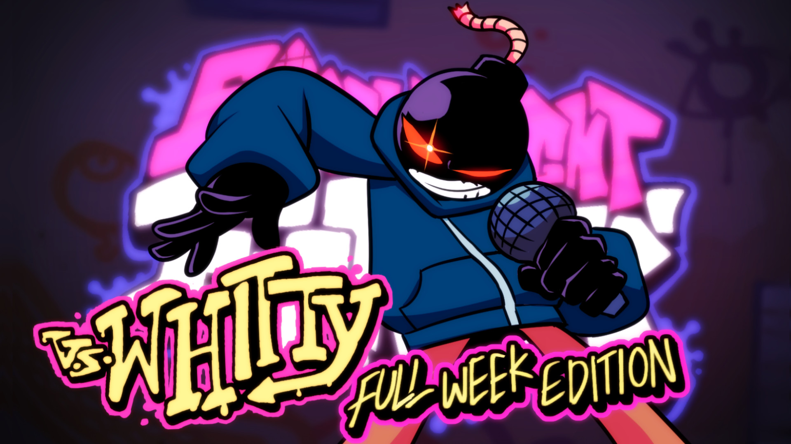